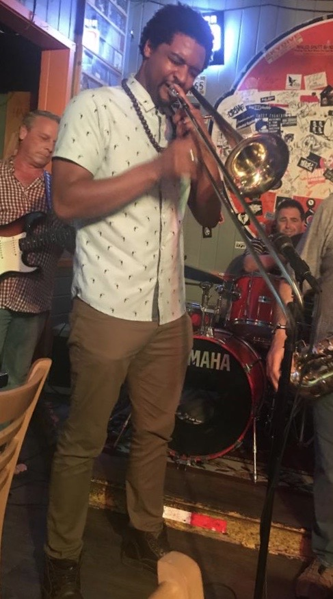
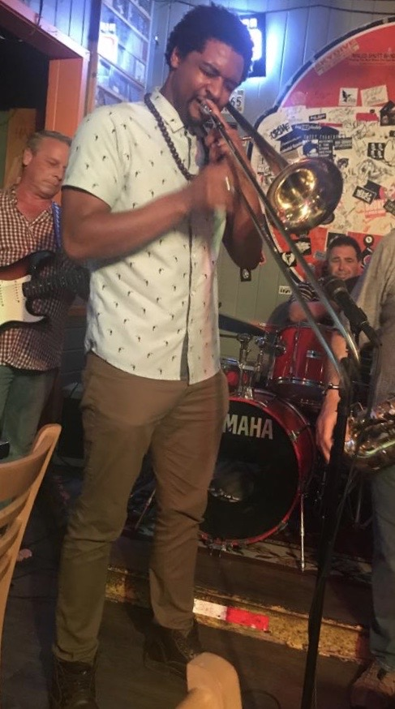

I’m a vocalist and trumpeter who performs original Soul, Hip-Hop, and Jazz songs. While I enjoy creating memorable high energy environments, I am also capable of more reflective and subdued performances. I take my life as a musical artist very seriously as I've served as a performer, composer, and educator for over 20 years. I also paraphrase cover songs and know how to keep an audience engaged!
Back to TopMansa Gory cell (914) 479-4197
The Mansa G’s voice is the first thing to grab you, this softly raspy vocal sings clearly and expresses vulnerability and passion intertwined. After this, the lyrics really start to sink in, “Prize” gathers momentum slowly but surely, never overstepping the mark or becoming anything irrelevant or overly attention grabbing. It feels like a very natural exploration of the central sentiments of the writing. The Mans a G pours so much heart into the process and when the passion reaches its peak his voice more than meets the needs of the moment. He screams out on behalf of everyone who’s ever felt the passion and conflict expressed throughout “Prize”. An impressive track, we can’t wait to hear more from The Mansa G
-BUZZ Music


 
